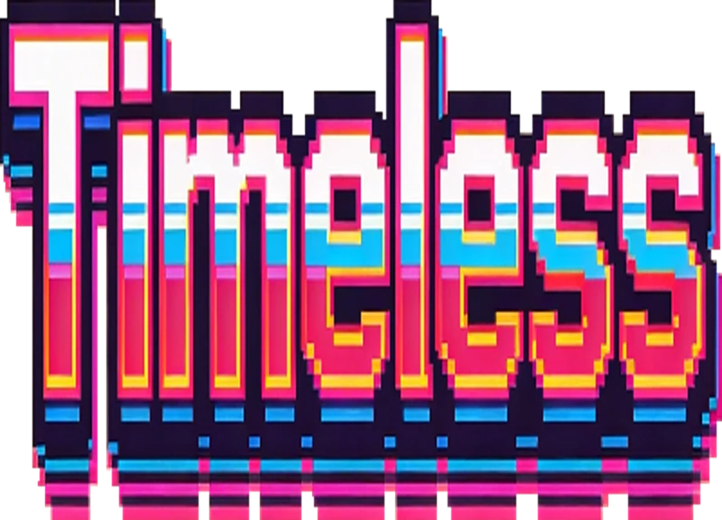
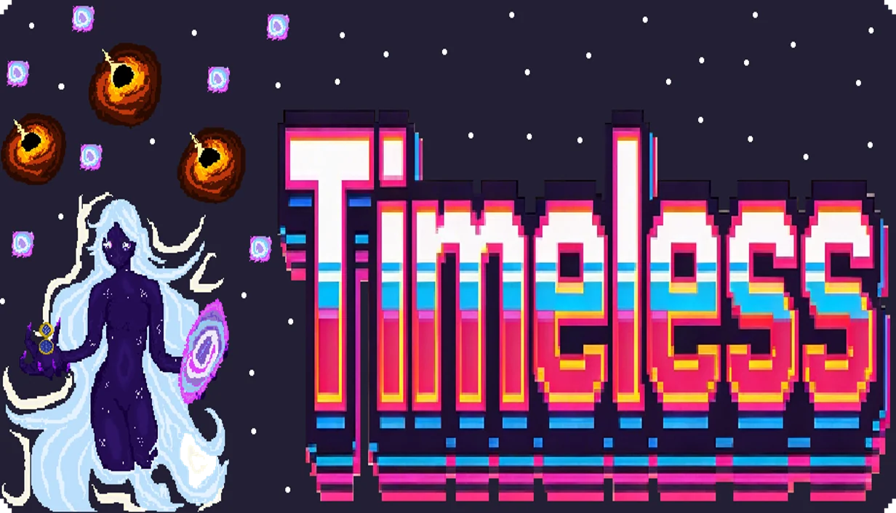
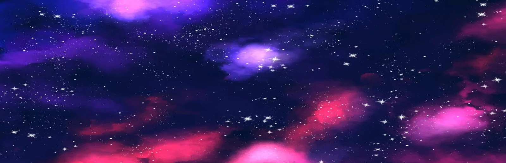
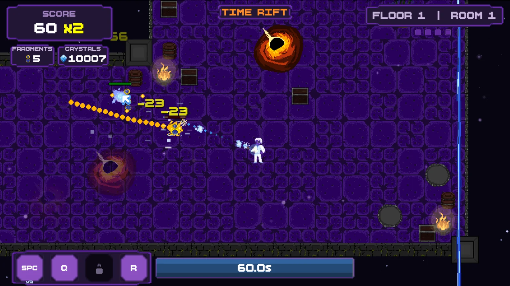
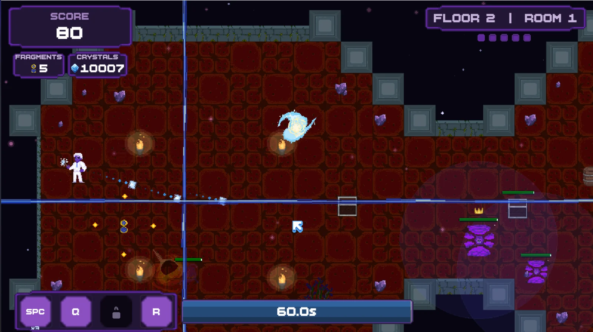
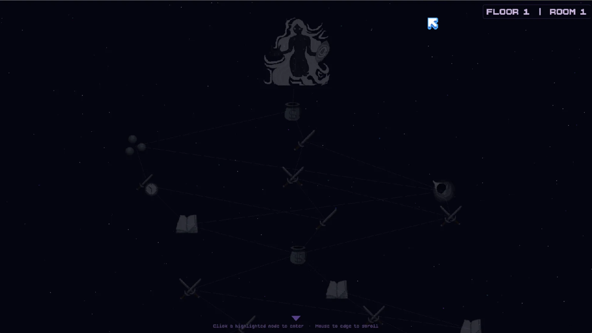
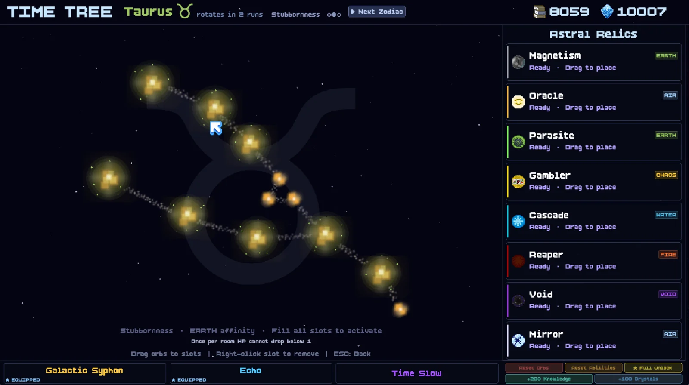
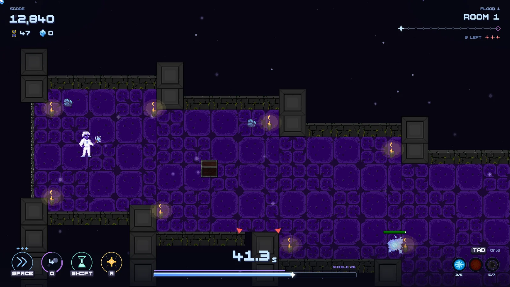

Timeless press kit
A twin-stick roguelike where the clock is the health bar. Everything on this page is free to use in articles, videos and streams about Timeless — no need to ask first.
3 MB zip · logo and key art as transparent PNG, screenshots as JPG
Fact sheet
- Developer
- Jonjoe1001
- Based in
- USA
- Release
- TBA
- Platform
- PC (Steam)
- Genre
- Twin-stick roguelike
- Engine
- Custom, on Pygame
- Modes
- Normal, Endless, Tutorial
- Input
- KB/M + controller
Short description
Timeless is a twin-stick roguelike where your health bar is a clock. You don’t lose hit points, you lose seconds — and when they run out, so do you. Kill to buy time back, so playing it safe is how you die.
Long description
Most roguelikes give you a health bar and a timer that have nothing to do with each other. Timeless smashes them together: take a hit, lose time; kill something, earn it back. Every room becomes a question of how fast you can afford to be.
Between rooms you chart your path across a constellation map, with the floor’s boss drawn in silhouette at the top from the very first room. Between runs, the Time Tree — a zodiac of Astral Relics with elemental affinities — shapes your next attempt, and the constellation in the sky rotates every few runs, so there is no single build to solve once and repeat forever.
Timeless runs on a custom engine written from scratch in Python by Jonjoe1001, with every piece of art hand drawn by KTB.
Features
- Time is your health. Damage costs seconds, kills earn them back.
- 94 upgrades, 8 enemies, 7 mini-bosses and 3 bosses, each with a Codex lore entry to unlock.
- The Time Tree: a rotating zodiac meta-progression built from Astral Relics.
- A constellation run map with the boss visible from room one.
- Normal, Endless and Tutorial modes, keyboard and mouse or controller.
- Hand-drawn art and a custom engine with its own room editor.
Logo and key art



Screenshots





Credits
- Jonjoe1001 — design, programming, engine
- KTB — art
- David Leugers (@Sharkhook) — sound effects
- kotayaki — music
Contact
For review keys, interviews or anything else, reach me through the contact page. Dev updates go up on the dev log (also as an RSS feed) and on YouTube.